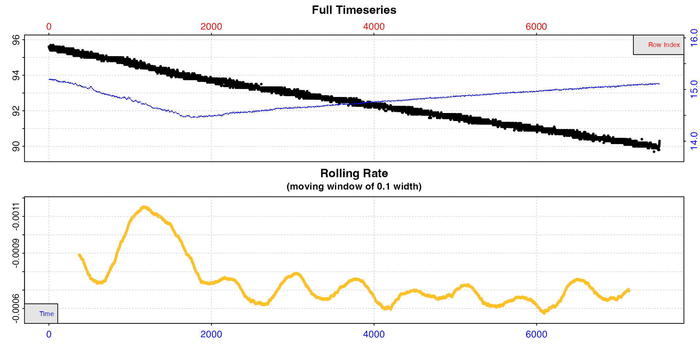

Introduction
The first step in any data analysis should be to visualise the data and check it for errors.
inspect() is a data exploration and preparation function
that visualises respirometry data and inspects it for common issues that
may affect the use of further functions in respR. Columns
of a dataframe are designated as time and
oxygen, and these are subset into a new object that can be
passed to subsequent functions, reducing the need for additional
inputs.
Note, use of inspect to prepare data for the subsequent
functions is optional. Most functions in respR can accept
regular R data objects including data frames, data tables,
tibbles, vectors, etc. It is a quality control and exploration step to
help users explore and prepare their data prior to analysis.
Depending on the data type, the function will perform a series of checks. These were informed by experiences working with real respirometry data from a variety of systems, and the data issues that were most frequently encountered.
Flowthrough respirometry data
Most of the following is also relevant to inspect.ft()
which is a special function for inspecting flowthrough respirometry
data. See vignette("flowthrough") for specific
examples.
Successful check
This is what a successful inspect check looks like; all
columns are numeric and without missing values, and the time data are
sequential, unique values and with even spacing. See plot section below for details about the plot.
inspect(sardine.rd)
#> inspect: Applying column default of 'time = 1'
#> inspect: Applying column default of 'oxygen = 2'
#> inspect: No issues detected while inspecting data frame.
#>
#> # print.inspect # -----------------------
#> Time Oxygen
#> numeric pass pass
#> Inf/-Inf pass pass
#> NA/NaN pass pass
#> sequential pass -
#> duplicated pass -
#> evenly-spaced pass -
#>
#> -----------------------------------------
This dataset is therefore ready to be passed to further
respR functions. While we have in general designed
respR to be robust to data which might contain these
issues, we have not been able to test every eventuality. Therefore, to
be fully confident in results and avoid obscure errors we strongly
recommend data be amended to pass the following tests wherever
possible.
Numeric
Many datasets on being imported to R can have column
data types misclassified. A stray character or even space may cause an
entire column of numeric data to be classed as a non-numeric format such
as character. For example, some versions of the Pyro and
Firesting systems software replace missing data with "---",
which causes the entire column to be classed as character
when imported to R. Often this is a single entry in a random location
where a data recording has been missed, or at the very end of a column,
so not obvious when the data is given a quick look.
The first and most important check inspect performs is
that the specified time and oxygen columns are
numeric. If this check fails, the rest of the checks for that column are
skipped, and the function exits returning a NULL value. No
plot is produced. respR functions cannot process
non-numeric data, so only when all inspected columns pass this check
will the function output an inspect object that can be
passed to subsequent functions.
Example
This dataset has a single time value missing and replaced with
"---", which causes the entire column to be classed as
character. This is not at all obvious if you view a portion
of the data not containing the missing value.
head(df)
#> time oxy
#> 1 1 7.86
#> 2 2 7.87
#> 3 3 7.89
#> 4 4 7.90
#> 5 5 7.87
#> 6 6 7.82Only by checking the structure is this obvious.
str(df)
#> 'data.frame': 100 obs. of 2 variables:
#> $ time: chr "1" "2" "3" "4" ...
#> $ oxy : num 7.86 7.87 7.89 7.9 7.87 7.82 7.84 7.84 7.86 7.81 ...These data cannot be used in respR until this is
remedied. This shows the output when this dataset is checked using
inspect.
inspect(df)#> Warning: inspect: Time column not numeric. Other column checks skipped.
#> Data cannot be analysed by respR functions if not numeric.
#> No output returned.
#>
#> # print.inspect # -----------------------
#> time oxy
#> numeric WARN pass
#> Inf/-Inf skip pass
#> NA/NaN skip pass
#> sequential skip -
#> duplicated skip -
#> evenly-spaced skip -
#>
#> -----------------------------------------Remedies
There are many ways to fix an issue such as this, from editing the
original file, to numerous potential solutions within R.
The easiest in this case is probably using as.numeric(). On
data such as this it will parse the obviously numeric values to numeric,
and where it cannot, replace them with an NA.
The problem value is in position 50.
df[48:52,]
#> time oxy
#> 48 48 7.63
#> 49 49 7.58
#> 50 --- 7.60
#> 51 51 7.60
#> 52 52 7.59We can try fixing the column with as.numeric, view the
same rows, and check the structure.
df[,1] <- as.numeric(df[,1])
#> Warning: NAs introduced by coercion
df[48:52,]
#> time oxy
#> 48 48 7.63
#> 49 49 7.58
#> 50 NA 7.60
#> 51 51 7.60
#> 52 52 7.59
str(df)
#> 'data.frame': 100 obs. of 2 variables:
#> $ time: num 1 2 3 4 5 6 7 8 9 10 ...
#> $ oxy : num 7.86 7.87 7.89 7.9 7.87 7.82 7.84 7.84 7.86 7.81 ...Now the column is numeric, but contains an NA value.
respR has been designed to work with NA values
in datasets, so analysing this one should not lead to any major issues.
respR relies on linear regressions on exact data values to
calculate rates, and NA values are simply ignored, so do
not affect slopes and therefore calculated rates, unless they occur over
large regions of the data.
However, we would strongly recommend that to be completely confident
in any results, and avoid obscure errors, NA values be
removed or replaced where possible before proceeding. Later checks in
inspect will identify locations of NA values
(see here). In this case it is easy to fix, as it
is obvious what the missing value is.
df[50,1] <- 50Now we can inspect again, and this time save the result.
insp <- inspect(df)#>
#> # print.inspect # -----------------------
#> time oxy
#> numeric pass pass
#> Inf/-Inf pass pass
#> NA/NaN pass pass
#> sequential pass -
#> duplicated pass -
#> evenly-spaced pass -
#>
#> -----------------------------------------Now the saved object insp can be passed to functions
such as calc_rate().
Inf/-Inf
The next most important check is for infinite (or minus infinite) values. Some oxygen sensing systems add these in error when interference or data dropouts occur. Infinite values will cause problems when it comes to calculating rates, so need to be removed.
Example
This datasets contains an infinite oxygen value.
inspect(data)
#> inspect: Applying column default of 'time = 1'
#> inspect: Applying column default of 'oxygen = 2'
#> Warning: inspect: Inf/-Inf values detected in Oxygen column(s). Remove or replace before proceeding.
#> inspect: Data issues detected. For more information use print().
#>
#> # print.inspect # -----------------------
#> Time Oxygen
#> numeric pass pass
#> Inf/-Inf pass WARN
#> NA/NaN pass pass
#> sequential pass -
#> duplicated pass -
#> evenly-spaced pass -
#>
#> Inf/-Inf locations in Oxygen column: Oxygen
#> [1] 22
#> -----------------------------------------We can see a warning, and the output also lists the locations (row
numbers) of the Inf values (up to the first 20), and we can
use this to view it and check.
data[20:25,]
#> Time Oxygen Temperature
#> 1: 520 95.3 15.1
#> 2: 521 95.0 15.0
#> 3: 522 Inf 15.1
#> 4: 523 95.2 15.1
#> 5: 524 95.2 15.1
#> 6: 525 95.3 15.1Remedies
Infinite values must be removed or replaced, or it will severely affect rate calculations, and may have other unknown effects in subsequent functions. Depending on how many, where they occur, etc., the appropriate way to do this will vary. Here, we could remove the row entirely, but since it is a single value we can just replace it with an intermediate value which won’t affect rate calculations.
data[22,2] <- (data[21,2] + data[23,2])/2
data[20:25,]
#> Time Oxygen Temperature
#> 1: 520 95.3 15.1
#> 2: 521 95.0 15.0
#> 3: 522 95.1 15.1
#> 4: 523 95.2 15.1
#> 5: 524 95.2 15.1
#> 6: 525 95.3 15.1
insp <- inspect(data)
#> inspect: Applying column default of 'time = 1'
#> inspect: Applying column default of 'oxygen = 2'
#> inspect: No issues detected while inspecting data frame.
#>
#> # print.inspect # -----------------------
#> Time Oxygen
#> numeric pass pass
#> Inf/-Inf pass pass
#> NA/NaN pass pass
#> sequential pass -
#> duplicated pass -
#> evenly-spaced pass -
#>
#> -----------------------------------------Now the saved object insp can be passed to functions
such as calc_rate().
NA/NaN
The third check is to look for missing data, that is NA
or NaN values. This is perhaps the most common issue
encountered when importing raw respirometry data files into
R. Many oxygen probe systems or computers struggle with
high recording frequencies, experience probe dropouts, suffer
interference, or other issues, and the typical practice is to fill the
resulting data gaps with NA or NaN.
respR has been designed to work with NA
values in datasets, so analysing data with NA/NaN values
should not lead to any major issues, unless they occur over large
regions of the data. respR relies on linear regressions on
exact data values to calculate rates, and NA/NaN values are
simply ignored, so do not affect slopes and therefore calculated rates.
However, we would strongly recommend that to be completely confident in
any results, and avoid obscure errors, NA/NaN values be
removed or replaced where possible before proceeding.
If inspect finds NA/NaN data, it outputs
the locations (row numbers) to assist with removing or filling them.
Example
This dataset has two columns of oxygen, one with a single
NA and one with a larger chunk of values missing.
insp <- inspect(df, time = 1, oxygen = 2:3, plot = FALSE)#>
#> # print.inspect # -----------------------
#> time oxy1 oxy2
#> numeric pass pass pass
#> Inf/-Inf pass pass pass
#> NA/NaN pass WARN WARN
#> sequential pass - -
#> duplicated pass - -
#> evenly-spaced pass - -
#>
#> NA/NaN locations in Oxygen column: oxy1
#> [1] 23
#> NA/NaN locations in Oxygen column: oxy2
#> [1] 57 58 59 60 61
#> -----------------------------------------The output console message gives a warning and prints the locations (up to the first 20) of the missing values in the respective column.
Remedies
The locations can also be found in the output object in the
$locs element with the name of the column.
insp$locs$oxy1$`NA/NaN`
#> [1] 23
insp$locs$oxy2$`NA/NaN`
#> [1] 57 58 59 60 61These can be used to extract or fill the missing values, or simply remove these rows. See above example.
Sequential Time
This check is performed on the time column only.
Numeric time values are expected to be sequential, that is increasing
in value. A failure of this check could be an indication of problems
importing the file or of converting date-time values to numeric time
using format_time() or other methods. This check helps flag
up that something might have occurred to make this happen on
import or processing, and might point to a larger problem that needs
investigating.
Non-sequential time values could cause unknown issues, so to be fully confident in results and avoid obscure errors, we would strongly recommend the data be amended to be sequential.
Example
This imported dataset contains time~oxygen data values, but no numeric time.
print(data)#> Warning in import_file("zebrafish.csv"): NOTE: 'import_file' function has been deprecated, will not be updated, and will be removed in a future version of 'respR'.
#>
#> # import_file # -------------------------
#> Firesting-Pyro file detected
#> -----------------------------------------
#> Time Comment Temperature Oxygen_Data_Ch_1
#> 1: 23:50:02 NA 13.5 9.79
#> 2: 23:50:04 NA 13.5 9.79
#> 3: 23:50:06 NA 13.5 9.79
#> 4: 23:50:08 NA 13.5 9.78
#> 5: 23:50:10 NA 13.5 9.79
#> ---
#> 490: 00:06:20 NA 13.5 9.56
#> 491: 00:06:22 NA 13.5 9.55
#> 492: 00:06:24 NA 13.5 9.55
#> 493: 00:06:26 NA 13.5 9.55
#> 494: 00:06:28 NA 13.5 9.54This is a small section of a real experiment where oxygen was recorded every 2 seconds. Note how the Firesting-Pyro system has exported times, but not dates, and that they cross over midnight.
We will use the lubridate() package to convert the times
to numeric. The details are not that important, but briefly the times
are converted to a date-time format R understands, then an elapsed time
from the first entry is calculated.
# parse to posix
data$parsed_time <- lubridate::parse_date_time(data[[1]], "HMS")
# convert to numeric difference in seconds from start
data$num_time <- as.numeric(difftime(data[[5]], data[[1,5]], units = "secs"))
# check
head(data)
#> Time Comment Temperature Oxygen_Data_Ch_1 parsed_time num_time
#> 1: 23:50:02 NA 13.5 9.79 0000-01-01 23:50:02 0
#> 2: 23:50:04 NA 13.5 9.79 0000-01-01 23:50:04 2
#> 3: 23:50:06 NA 13.5 9.79 0000-01-01 23:50:06 4
#> 4: 23:50:08 NA 13.5 9.78 0000-01-01 23:50:08 6
#> 5: 23:50:10 NA 13.5 9.79 0000-01-01 23:50:10 8
#> 6: 23:50:12 NA 13.5 9.78 0000-01-01 23:50:12 10Now we inspect the data using the new numeric time
inspect(data, time = 6, oxygen = 4)
#> Warning: inspect: Non-sequential Time values found.
#> Warning: inspect: Time values are not evenly-spaced (numerically).
#> inspect: Data issues detected. For more information use print().
#>
#> # print.inspect # -----------------------
#> num_time Oxygen_Data_Ch_1
#> numeric pass pass
#> Inf/-Inf pass pass
#> NA/NaN pass pass
#> sequential WARN -
#> duplicated pass -
#> evenly-spaced WARN -
#>
#> Non-sequential Time data locations in column: num_time
#> [1] 299
#> Uneven Time data locations in column: num_time
#> [1] 299
#> Minimum and Maximum intervals in uneven Time data:
#> [1] -86398 2
#> -----------------------------------------Clearly there is something wrong, and the location where non-sequential time data has been found is row 299. The issue has also caused the evenly-spaced time check (see here) to fail, which we will cover later. Often the same issue will cause more than one check to fail.
If we look at this region, it is clear what the problem is.
data[297:302,]
#> Time Comment Temperature Oxygen_Data_Ch_1 parsed_time num_time
#> 1: 23:59:54 NA 13.6 9.99 0000-01-01 23:59:54 592
#> 2: 23:59:56 NA 13.6 9.98 0000-01-01 23:59:56 594
#> 3: 23:59:58 NA 13.5 9.99 0000-01-01 23:59:58 596
#> 4: 00:00:00 NA 13.6 9.99 0000-01-01 00:00:00 -85802
#> 5: 00:00:02 NA 13.6 9.99 0000-01-01 00:00:02 -85800
#> 6: 00:00:04 NA 13.6 10.00 0000-01-01 00:00:04 -85798Where times have crossed midnight, our code has failed to parse it correctly. The lack of dates along with times means we have incorrectly calculated the elapsed time.
Remedies
If this particular issue is detected, it is usually an indication of a deeper problem, so the actual remedy will depend on the situation, from editing the original data file, to various solutions within R, such as reordering rows.
Here, we can simply use the respR function
format_time() (see also
vignette("format_time")), which has been designed to detect
and fix this specific problem of times which cross midnight but have no
date attached. format_time parses and converts the times to
numeric and adds them as a new column.
#> Warning in import_file("zebrafish.csv"): NOTE: 'import_file' function has been deprecated, will not be updated, and will be removed in a future version of 'respR'.
data <- format_time(data, time = 1, format = "HMS")
#> Times cross midnight, attempting to parse correctly...
data[297:302,]
#> Time Comment Temperature Oxygen_Data_Ch_1 time_num
#> 1: 23:59:54 NA 13.6 9.99 593
#> 2: 23:59:56 NA 13.6 9.98 595
#> 3: 23:59:58 NA 13.5 9.99 597
#> 4: 00:00:00 NA 13.6 9.99 599
#> 5: 00:00:02 NA 13.6 9.99 601
#> 6: 00:00:04 NA 13.6 10.00 603If we inspect again, the problem is fixed.
inspect(data, time = 5, oxygen = 4)
#> inspect: No issues detected while inspecting data frame.
#>
#> # print.inspect # -----------------------
#> time_num Oxygen_Data_Ch_1
#> numeric pass pass
#> Inf/-Inf pass pass
#> NA/NaN pass pass
#> sequential pass -
#> duplicated pass -
#> evenly-spaced pass -
#>
#> -----------------------------------------Duplicate Time
This check is performed on the time column only.
Duplicate time values can result from rounding time values, or the system accidentally recording two values close together, or some other issues causing values to be repeated or duplicated.
This warning is not necessarily a major issue. respR
relies on linear regressions on time~oxygen paired data values to
calculate rates. When fitting linear regressions, duplicates will not
affect results so as long as the data are genuine values. However, the
check flags up that something might have occurred to make this
happen on import or processing, and might point to a larger problem.
Example 1
This dataset has been recorded at approximately 1 second intervals, but at 0.1s precision, and when rounded to the nearest second this leads to lots of duplicated values.
## original data
head(data_orig, 5)
#> times oxy
#> 1 1.1 7.20
#> 2 2.5 7.21
#> 3 4.0 7.15
#> 4 5.0 7.13
#> 5 5.8 7.18
## Before rounding
head(data_orig$times, 10)
#> [1] 1.1 2.5 4.0 5.0 5.8 6.7 7.8 8.0 9.9 11.0
## After rounding to nearest second
head(data_round$times, 10)
#> [1] 1 2 4 5 6 7 8 8 10 11
inspect(data_round)#>
#> # print.inspect # -----------------------
#> times oxy
#> numeric pass pass
#> Inf/-Inf pass pass
#> NA/NaN pass pass
#> sequential pass -
#> duplicated WARN -
#> evenly-spaced WARN -
#>
#> Duplicate Time data locations (first 20 shown) in column: times
#> [1] 7 8 11 12 17 18 19 20 22 23 29 30 31 32 36 37 39 40 42 43
#> Uneven Time data locations (first 20 shown) in column: times
#> [1] 2 7 8 11 13 17 18 19 21 22 23 29 30 31 34 36 37 39 40 42
#> Minimum and Maximum intervals in uneven Time data:
#> [1] 0 2
#> -----------------------------------------Remedies
In this case, inspect produces a duplicate times
warning, however it can be safely ignored. These values are perfectly
valid at this precision, and when it comes to fitting linear regressions
and calculating rates will not realistically affect rate calculations.
However, an alternative option would be to not round the times at all;
respR will happily accept any form of numeric decimalised
time value.
Example 2
This dataset by contrast contains several duplicated rows. The
inspect call detects and identifies these, allowing them to
be checked or amended.
insp <- inspect(data)#>
#> # print.inspect # -----------------------
#> Time Oxygen
#> numeric pass pass
#> Inf/-Inf pass pass
#> NA/NaN pass pass
#> sequential pass -
#> duplicated WARN -
#> evenly-spaced WARN -
#>
#> Duplicate Time data locations in column: Time
#> [1] 101 102 103 104 105 106 107 108 109 110
#> Uneven Time data locations in column: Time
#> [1] 101 102 103 104 105 106 107 108 109
#> Minimum and Maximum intervals in uneven Time data:
#> [1] 0 1
#> -----------------------------------------We can check these rows by extracting the relevant locations from the
$locs element of the saved output, and we see that for some
reason the row has been duplicated.
dupes <- insp$locs$Time$duplicated
data[dupes,]
#> Time Oxygen Temperature
#> 1: 2100 93.7 14.5
#> 2: 2100 93.7 14.5
#> 3: 2100 93.7 14.5
#> 4: 2100 93.7 14.5
#> 5: 2100 93.7 14.5
#> 6: 2100 93.7 14.5
#> 7: 2100 93.7 14.5
#> 8: 2100 93.7 14.5
#> 9: 2100 93.7 14.5
#> 10: 2100 93.7 14.5Remedies
Like other checks, if or how to amend this issue will depend on the
situation. Here, these duplicate rows could affect rate calculations, if
for instance we are determining rates over a specific row width across
the dataset (by contrast a rate using a time width would be
unaffected). They could also affect other reported outputs such as the
r-squared. It’s probably easiest to just remove them, and
inspect the data again.
## Remove all but the first duplicate row
data <- data[-dupes[-1],]
## inspect again
inspect(data)
#> inspect: Applying column default of 'time = 1'
#> inspect: Applying column default of 'oxygen = 2'
#> inspect: No issues detected while inspecting data frame.
#>
#> # print.inspect # -----------------------
#> Time Oxygen
#> numeric pass pass
#> Inf/-Inf pass pass
#> NA/NaN pass pass
#> sequential pass -
#> duplicated pass -
#> evenly-spaced pass -
#>
#> -----------------------------------------Evenly Spaced Time
Depending on the time metric, this is perhaps the most frequently seen warning. Generally, respirometry data are recorded at regular intervals. Any irregular intervals between time values are an indication that something might have gone wrong: the system stopped recording for a period, some data were lost when imported, rows were removed accidentally, or some other reason. The purpose of this check is to find and report any such gaps in the data. If these are found, the locations are returned, and in addition the maximum and minimum intervals in the time data.
Example 1
One reason this check might produce warnings is through use of a
metric such as decimalised minutes. For example, data recorded once per
second, but converted to minutes is used in the
flowthrough_mult.rd example data.
# seconds in decimal minutes
head(flowthrough_mult.rd[[1]])
#> [1] 0.02 0.03 0.05 0.07 0.08 0.10
# difference between each value
diff(head(flowthrough_mult.rd[[1]]))
#> [1] 0.01 0.02 0.02 0.01 0.02These have been converted to minutes and rounded, and we can see the
intervals are not numerically consistent. This will cause this check to
produce a warning in inspect.
inspect(flowthrough_mult.rd)
#> inspect: Applying column default of 'time = 1'
#> inspect: Applying column default of 'oxygen = 2'
#> Warning: inspect: Time values are not evenly-spaced (numerically).
#> inspect: Data issues detected. For more information use print().
#>
#> # print.inspect # -----------------------
#> num.time oxy.out.1
#> numeric pass pass
#> Inf/-Inf pass pass
#> NA/NaN pass pass
#> sequential pass -
#> duplicated pass -
#> evenly-spaced WARN -
#>
#> Uneven Time data locations (first 20 shown) in column: num.time
#> [1] 1 2 3 4 5 6 7 8 9 10 11 12 13 14 15 16 17 18 19 20
#> Minimum and Maximum intervals in uneven Time data:
#> [1] 0.01 0.02
#> -----------------------------------------Remedies
While there are too many locations printed here to get a handle on if there are actual gaps in the data, the additional print out of the minimum and maximum time intervals tells us the intervals are what we would expect with these time values, so in the case of these data they are fine to pass to subsequent functions.
Example 2
If there were a larger time gap in the data, this check would flag it up. This dataset is missing a large number of rows.
insp <- inspect(data)#>
#> # print.inspect # -----------------------
#> Time O2
#> numeric pass pass
#> Inf/-Inf pass pass
#> NA/NaN pass pass
#> sequential pass -
#> duplicated pass -
#> evenly-spaced WARN -
#>
#> Uneven Time data locations in column: Time
#> [1] 341
#> Minimum and Maximum intervals in uneven Time data:
#> [1] 1 47
#> -----------------------------------------While there is only one time gap location at row 341, we can see this is a large gap of 47 seconds.
data[340:344, ]
#> Time O2
#> 1: 340 6.94
#> 2: 341 6.96
#> 3: 388 6.90
#> 4: 389 6.90
#> 5: 390 6.90Remedies
Like many of the issues, if or how to fix this depends on the context. In this case it may have been an accidental deletion or importing problem. However, you can still calculate rates across these gaps, which will be perfectly reportable, as long as care is taken to understand the implications of doing this.
Calculating rates across gaps
calc_rate() allows you to calculate a rate using a
"row" or "time" interval. In this dataset,
because the time is in seconds and recording interval once per second,
they are therefore equivalent to the row numbers. Any rates calculated
in a complete region of the data before the gap will be identical for
either method.
summary(cr_row)
#>
#> # summary.calc_rate # -------------------
#> Summary of all rate results:
#>
#> rep rank intercept_b0 slope_b1 rsq row endrow time endtime oxy endoxy rate.2pt rate
#> 1: NA 1 7.14 -0.000489 0.645 100 300 100 300 7.08 6.98 -0.0005 -0.000489
#> -----------------------------------------
summary(cr_time)
#>
#> # summary.calc_rate # -------------------
#> Summary of all rate results:
#>
#> rep rank intercept_b0 slope_b1 rsq row endrow time endtime oxy endoxy rate.2pt rate
#> 1: NA 1 7.14 -0.000489 0.645 100 300 100 300 7.08 6.98 -0.0005 -0.000489
#> -----------------------------------------This will not be the case across the gap, or after it where row numbers will now not be equivalent to the time values.
cr_row <- calc_rate(data, 200, 400, "row")
cr_time <- calc_rate(data, 200, 400, "time")
summary(cr_row)
#>
#> # summary.calc_rate # -------------------
#> Summary of all rate results:
#>
#> rep rank intercept_b0 slope_b1 rsq row endrow time endtime oxy endoxy rate.2pt rate
#> 1: NA 1 7.19 -0.000712 0.879 200 400 200 446 7.05 6.87 -0.000732 -0.000712
#> -----------------------------------------
summary(cr_time)
#>
#> # summary.calc_rate # -------------------
#> Summary of all rate results:
#>
#> rep rank intercept_b0 slope_b1 rsq row endrow time endtime oxy endoxy rate.2pt rate
#> 1: NA 1 7.18 -0.000676 0.719 200 354 200 400 7.05 6.89 -0.0008 -0.000676
#> -----------------------------------------Note how the interval is correct in the respective metric, but now differs in the other.
Either of these is reportable depending on the research question or
rate determination criteria, and a ‘correct’ rate in their own right. If
however, for example, you want to report a rate across a consistent time
window, the by = "row" result, while an accurate rate for
that row interval, does not conform to the expected time window.
Such gaps may also affect rolling rate determinations, such as in the
auto_rate() function, if done using
by = "row".
Note also, because of the missing rows, all rows after the gap will not conform to the same time values, although as long as they don’t include the gap will represent an equivalent time window.
Plot
When using inspect, a plot of the inspected data is
produced (unless plot = FALSE), against both time (bottom
blue axis) and row index (top red axis).
The top plot is the complete timeseries of oxygen against time. The
bottom plot is a rolling regression plot. This shows the rate of change
in oxygen across a rolling window specified using the width
operator (default is width = 0.1, or 10% of the entire
dataset). Each rate value is plotted against the centre of the time
window used to calculate it. This plot provides a quick visual
inspection of how the rate varies over the course of the experiment.
Regions of stable and consistent rates can be identified on this plot as
flat or level areas. This plot is for exploratory purposes only; later
functions allow rate to be calculated over specific regions.
Note, that because respR is primarily used to examine
oxygen consumption, the rolling rate plot is plotted on a reverse
y-axis. In respR oxygen uptake rates are negative since
they represent a negative slope of oxygen against time. In rolling rate
plots, by default the axis is reversed so that higher uptake rates
(e.g. maximum or active rates) will be higher on these plots. If you are
interested instead in oxygen production rates, which are positive, the
rate.rev = FALSE input can be passed in either the
inspect call, or when using plot() on the
output object. In this case, the rate values will be plotted not
reversed, with higher oxygen production rates higher on the
plot.
Rolling rate plot
Some datasets may benefit from changing the width to get
a better idea of how the rate fluctuates across the data. This is
helpful to inform the regions from which to extract rates in later
functions, as well as an appropriate time or row window to use when
extracting rates.
## default width of 10%
inspect(sardine.rd)In these data, after an initial unstable period rates seem to stabilise, but there is still a lot of variability, with rates fluctuating between around -0.0006 and -0.0008.
## width of 20%
inspect(sardine.rd, width = 0.2)With a higher width rates after the initial period are
much more stable. This tells us (presuming we are interested in routine
rates) that we probably want to extract rates from after timepoint 2000,
should not use a time window shorter than around 20% of the total data
length, and that our extracted rate should be around -0.0007.
If we are interested in the very lowest rate, it seems to occur just
before timepoint 6000 (although see auto_rate() for
extracting the lowest rates).
Intermittent-flow data
Note, intermittent-flow data will include rates across flush periods, which can skew results, and possibly make the output difficult to interpret.
inspect(intermittent.rd)
Here the flushes skew the rolling rates, but within each replicate rates seem to be a consistent value of around -0.0005.
However, you can always use inspect without saving the
result for a closer look at regions of the data, though note the
width input will apply to the subset, not the original data
length.
inspect(intermittent.rd[1:1800,])
Inspect portions of long experiments
For really long experiments, both the timeseries and rolling rate plot may be difficult to interpret. This experiment on a zebra fish is 22h long and nearly 80000 rows.
inspect(zeb_intermittent.rd)
inspect can be used without saving the result for a
closer look at smaller regions of the data, to better see what is going
on.
inspect(zeb_intermittent.rd[20000:24000,])This better shows us the structure of this intermittent-flow
experiment. Within these replicates specimen rates appear to be
consistent at around -0.002, but note this may not be accurate because
the rolling rate window might include the flush which will skew rate
values. When subset like this, the width operator refers to
the length of the subset not the original data.
Multiple columns of oxygen data
For a quick overview of larger datasets, multiple oxygen columns can
be inspected by using the oxygen input to select multiple
columns. These must share the same time column. In this
case, data checks are performed, with a plot of each oxygen time series,
but no rolling rate plot is produced. All data are plotted on the same
axis range of both time and oxygen (total range of data).
This is chiefly exploratory functionality to allow for a quick
overview of a dataset. Note, that if it is saved the output
inspect object will contain all columns in its
$dataframe element, but subsequent functions in
respR (calc_rate, auto_rate,
etc.) will by default only use the first two columns
(time, and the first specified oxygen column).
To analyse and determine rates from different columns, best practice is
to inspect and assign each time-oxygen column pair as separate
inspect objects.
inspect(urchins.rd, time = 1, oxygen = 8:19)This gives us a quick visual overview of the dataset, allowing us to, for example, see the experiments which have some sort of issues, and which are controls (the last two here).
Plot an additional data type
By using the add.data input an additional data source
(for example temperature) can be plotted in alongside the oxygen
timeseries to help with understanding where rates may or may not have
fluctuated. This input indicates a column number in the same input data
frame sharing the same time data. This column is not passed through the
above checks. It is a visual aid only to help with selection of regions
from which to extract rates.
## Plot column 4 (temperature) alongside oxygen timeseries
inspect(sardine.rd, time = 1, oxygen = 2, add.data = 3)
Additional plotting options
Additional plotting controls can be passed in either the main
inspect call or when using plot() on the
output object.
Most notable is rate.rev = FALSE. This means rates in
the rolling rate plot will be plotted on a normal y-axis, that is not
reversed. This allows oxygen production rates to be plotted correctly,
with higher rates appearing higher on the plot.
If axis labels obscure parts of the plot they can be suppressed using
legend = FALSE. Console output messages can be suppressed
with quiet = TRUE (in plot() only). Lastly, a
different width value can be passed to see how it affects
the rolling rate plot.
In addition, the generic par() inputs oma,
mai, tck, mgp, las,
and pch are accepted via ... to allow default
parameters to be changed. Particularly useful are las = 1
to make axis labels horizontal and adjusting the second (left side) of
the four mai (inner margins) input to make y-axis labels
more readable.
This example examining oxygen production in algae uses some of these options.